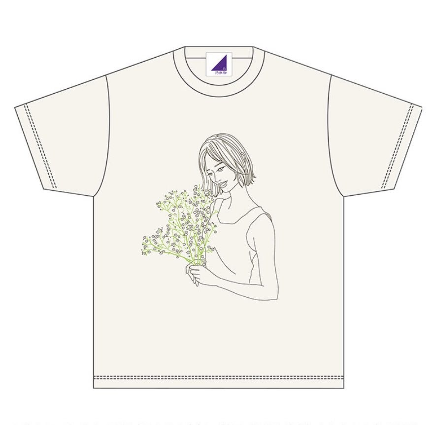
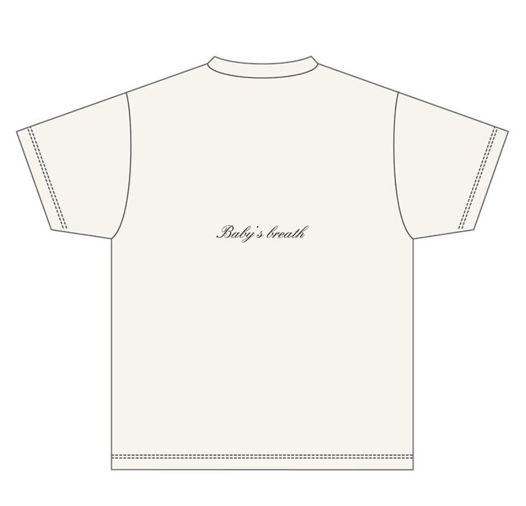

2020/0927Sunあっという間にお誕生日の事を考える季節になったみたい
こんにちは！
伊藤純奈です！
今年の生誕グッズの
予約販売が開始して
おります〜☺︎
11月30日の誕生花は
「かすみ草」ということで
かすみ草を持った写真を
イラストにしてもらったよ〜。
お花が好きだからすごく
お気に入りのデザイン！


後の「Baby's breath」
かすみ草って意味だよ〜
Tシャツの色はアイボリーに
して男女共に私服でも着やすい
感じにしたから届いたらぜひ
コーディネートに取り入れてみてね☺︎
でも届くのめっちゃ寒い時期だから
Tシャツ難しいかな、、、(笑)
ニットカーディガンとか羽織ってみてね(笑)
ちなみにこれの
元になってる写真はこれ！
755の背景にもしてたんだけど
気付いてる人ちょこちょこいたね( ˙꒳˙ )
9月28日23時までの受付です！
ぜひゲットしてね〜！！
それでは！
2020/09/27 14:14
コメント(225)
じゅんなちゃん
ブログ更新ありがとうねぇ
生誕Tシャツ発売して
デザイン見たとき
あーやってくれたな、笑
755の背景だとすぐにわかりました
元の写真載せてくれて
ありがとう とても素敵です
やわらかな自然の光が
優しい笑顔の じゅんなちゃんを
引き出してくれてる
カメラマンさんに感謝します
もちろんTシャツやグッズは
予約済みです
届くのが楽しみです
また楽しみ増えたよ
ブログ更新ありがとうねぇ
生誕Tシャツ発売して
デザイン見たとき
あーやってくれたな、笑
755の背景だとすぐにわかりました
元の写真載せてくれて
ありがとう とても素敵です
やわらかな自然の光が
優しい笑顔の じゅんなちゃんを
引き出してくれてる
カメラマンさんに感謝します
もちろんTシャツやグッズは
予約済みです
届くのが楽しみです
また楽しみ増えたよ
そうみたいね
ことしも素敵だね～＾＾ｖ
生誕tのセンスよすぎ！かわいい！！！
じゅんなしか勝たん！かわいい！
じゅんなしか勝たん！かわいい！
じゅん＼(^o^)／お疲れさまでした
生誕Tデザインは良いね
実写じゃないから着やすいよ(*´ω｀*)
そっか、Babys breathはかすみ草という意味か？また勉強になった
きゃーー、でもやっぱり実写のじゅんが可愛すぎるよ(｡>﹏<｡)
特に2枚めの振り返るじゅん(｡>﹏<｡)♡♡♡♡
でも今お金がないから、グッズは我慢しなきゃ(´；ω；｀)
これからも頑張って(/･ω･)/
生誕Tデザインは良いね
実写じゃないから着やすいよ(*´ω｀*)
そっか、Babys breathはかすみ草という意味か？また勉強になった
きゃーー、でもやっぱり実写のじゅんが可愛すぎるよ(｡>﹏<｡)
特に2枚めの振り返るじゅん(｡>﹏<｡)♡♡♡♡
でも今お金がないから、グッズは我慢しなきゃ(´；ω；｀)
これからも頑張って(/･ω･)/
純奈ちゃんブログありがとう！！！
誕生T届くの楽しみに待ってます☺︎
おしゃれで可愛い〜！！原画も可愛くて美人さんだあ！！！
純奈ちゃんの誕生日を直接お祝いできないの寂しいけど、お祝いするから気持ちが届いてればいーな！！
10.17は伊藤純奈の日だね☺︎
誕生T届くの楽しみに待ってます☺︎
おしゃれで可愛い〜！！原画も可愛くて美人さんだあ！！！
純奈ちゃんの誕生日を直接お祝いできないの寂しいけど、お祝いするから気持ちが届いてればいーな！！
10.17は伊藤純奈の日だね☺︎
イラストも写真の実物の純奈ちゃんも、両方とも素敵です！！
なんて優しいデザインなんでしょう！
まさに
ゆっくりと咲く花
まさに
ゆっくりと咲く花
純ちゃん こんにちは
とても素敵なTシャツ
おしとやかな感じがいいですね
大人純奈な感じ
2ヶ月後ですね
とても素敵なTシャツ
おしとやかな感じがいいですね
大人純奈な感じ
2ヶ月後ですね
じゅんなぁー！
誕生Tシャツとか買いたいんだけど、金欠すぎてやばいのよ。だから今回パスさせて貰うね。。。ごめんなさい。来年のやつはぜ〜ったい買うから卒業しないでね！
誕生Tシャツとか買いたいんだけど、金欠すぎてやばいのよ。だから今回パスさせて貰うね。。。ごめんなさい。来年のやつはぜ〜ったい買うから卒業しないでね！
ブログ更新ありがとう。バッチリ予約したよ。今から届くの楽しみ。またバッチリコメ残すね。ナオッチ
純奈ちゃん更新ありがとうございますｯ！
もちろんTシャツ予約しましたとも、、
男女兼用で作ってくれるところさすがです…ﾏｼﾞｶﾝｼｬ
自分の誕生花なんて調べることなかったので
純奈ちゃんのおかげで調べられました！！！！ﾅﾏｽﾃ-
純奈ちゃんの他撮りめちゃめちゃファンです。
自撮りも好きなんですけど
お姉さまやお友達、カメラマンさんの撮る
純奈ちゃんも大好きで
どんな目線で純奈ちゃんを
撮ってくれるのかワクワクできます。ﾄｷｷﾒｷﾒｷ
これからも自撮りand他撮り楽しみにしてます！！！すき
では！お体には気をつけて過ごしてくださいｯ ☺︎
もちろんTシャツ予約しましたとも、、
男女兼用で作ってくれるところさすがです…ﾏｼﾞｶﾝｼｬ
自分の誕生花なんて調べることなかったので
純奈ちゃんのおかげで調べられました！！！！ﾅﾏｽﾃ-
純奈ちゃんの他撮りめちゃめちゃファンです。
自撮りも好きなんですけど
お姉さまやお友達、カメラマンさんの撮る
純奈ちゃんも大好きで
どんな目線で純奈ちゃんを
撮ってくれるのかワクワクできます。ﾄｷｷﾒｷﾒｷ
これからも自撮りand他撮り楽しみにしてます！！！すき
では！お体には気をつけて過ごしてくださいｯ ☺︎
生誕グッズ買いました！おしゃれだしめっちゃ好みでとてもいい感じです！！
純奈ちゃん、ブログ更新ありがとう‼
もう誕生日くるね～
デザインすごいいいね！！
おしゃれ
かすみ草の花言葉は「愛しい人や赤ちゃんのの吐息」っていう意味らしいよ！
買うね！！
愛媛県在住 中３女子 音より
追伸：今日も一日お疲れ様！
もう誕生日くるね～
デザインすごいいいね！！
おしゃれ
かすみ草の花言葉は「愛しい人や赤ちゃんのの吐息」っていう意味らしいよ！
買うね！！
愛媛県在住 中３女子 音より
追伸：今日も一日お疲れ様！
純奈ー＼(^^)／
ブログ更新ありがとー
生誕Tシャツのデザイン素敵ですね
これから寒くなってくるけど、体調くずさんように気つけてね！
これからも、応援しています。
ブログ更新ありがとー
生誕Tシャツのデザイン素敵ですね
これから寒くなってくるけど、体調くずさんように気つけてね！
これからも、応援しています。
チャァオ～～!☆彡
優しい～～～～⤴️⤴️⤴️
優しい～～～～⤴️⤴️⤴️
綺麗可愛い～～～⤴️⤴️⤴️
大好きなぁ～～～⤴️⤴️⤴️
純ちゃんちゃん、こんにちは～～～～⤴️⤴️⤴️❕❤️❤️❤️❤️❤️笑顔
❤️❤️ヾ(@゜▽゜@)ノ❤️❤️
ブログ更新ありがとうございます❕❤️❤️❤️❤️❤️笑顔
写メ～～～～⤴️⤴️⤴️
めためた～～～綺麗可愛い～～～⤴️⤴️⤴️です❕❤️❤️❤️❤️❤️笑顔
本当に、綺麗可愛い過ぎますよ～～～⤴️⤴️⤴️❕❤️❤️❤️❤️❤️笑顔
お洋服がまた～～～・・・
秋にぴったりで大人ぽくって、素敵過ぎます❕❤️❤️❤️❤️❤️笑顔
この写メの等身大ポスターがあれば欲しい～～です❕❤️❤️❤️❤️❤️笑顔
部屋に飾りたいですよ～～～⤴️⤴️⤴️❕❤️❤️❤️❤️❤️笑顔
・・❕笑顔
さっきバスに20分乗って、２週間前に予約しておいた携帯電話会社に行ってきて
携帯電話の相談に行ってきました～～❕笑顔 (半壊れです❕笑顔)
なぜかぁ～契約に保証サービスに入っていたので～～⤴️⤴️
(当本人は、すっかり忘れてました～❕笑)
明日、全く同じ物が自宅に届きます❕笑顔
ただコンパクトな携帯なので～～・・・
手帳型ケースがないので、探す範囲をひろげます❕笑顔
それでは～～大好きなぁ～～⤴️⤴️⤴️
大好きなぁ～～純ちゃんちゃん、お互いに頑張りましょうねぇ～～⤴️⤴️⤴️❕❤️❤️❤️❤️❤️笑顔
またねぇ～❕❤️❤️❤️❤️❤️笑顔
(＠＾▽゜＠）ゞ❤️❤️❤️
純ちゃん、SUPER LOVE ❤️❤️❤️
(今日も半沢直樹を見るどお～～～～⤴️⤴️⤴️❕笑顔)
(勿論、工事中も見ますよ❕❤️❤️❤️笑顔)
❇️❇️おすまし！⚜️❇️⭐彡
純ちゃん！ ブログ更新ありがとう！！
生誕Tシャツ、素敵ですね♪
これからも色々頑張って！ 大好きです♡♡
生誕Tシャツ、素敵ですね♪
これからも色々頑張って！ 大好きです♡♡
純奈ちゃん、綺麗だよ！( ￣∇￣)σ:
こんにちわ！
生誕Tシャツのデザイン素敵だね！
2枚目の写真かわいい！
生誕Tシャツのデザイン素敵だね！
2枚目の写真かわいい！
ブログ更新ありがとうございます。
生誕Tシャツ買いました！
はやくこれきて握手会とかライブ行きたいです！
届くの楽しみにしてます。
お身体に気をつけてお仕事頑張ってください^_^
生誕Tシャツ買いました！
はやくこれきて握手会とかライブ行きたいです！
届くの楽しみにしてます。
お身体に気をつけてお仕事頑張ってください^_^
純奈ちゃん、ブログありがとう！
今日の写真とてもキレイ。夏らしくいい感じです。
生誕Tシャツ注文したよー。いいデザインだね。
急に秋っぽくなってきたので、体調に気をつけてねー。
今日の写真とてもキレイ。夏らしくいい感じです。
生誕Tシャツ注文したよー。いいデザインだね。
急に秋っぽくなってきたので、体調に気をつけてねー。
ブログ更新ありがとう
かすみ草の英語名がbaby's breath
ピッタリな名前ですね。
かすみ草の英語名がbaby's breath
ピッタリな名前ですね。
純奈～。 相変わらず可愛いし～。元気そうで何よりです。会いたいけど～。生誕グッズは申込みましたので楽しみです。ラブ ♥️❤️
白と紫が似合ってて、美人だなぁ
いいね めっちゃカワイイ
純奈ちゃんブログ更新ありがとう！
生誕祭Tシャツ買ったよ〜！！
めっちゃおしゃれ！
ちなみに755の背景ぽいなとは思ってた笑
純奈ちゃんとのお揃い楽しみだー！
あと解王みたよー！結果は残念だったけど、まいちゅんと純奈ちゃんの絡み可愛かった！
またリベンジで出てほしいな〜
これからも応援してます！
体調に気をつけて下さいね！
生誕祭Tシャツ買ったよ〜！！
めっちゃおしゃれ！
ちなみに755の背景ぽいなとは思ってた笑
純奈ちゃんとのお揃い楽しみだー！
あと解王みたよー！結果は残念だったけど、まいちゅんと純奈ちゃんの絡み可愛かった！
またリベンジで出てほしいな〜
これからも応援してます！
体調に気をつけて下さいね！
うむ、素敵なデザインだ
こりゃ買いですね
こりゃ買いですね
こんばんは。セブンだよ(ฅ'ω'ฅ)♪
今日も1日お疲れ様です
生誕Tめっちゃ良いですね！
イラストは誰が書いたんですか？
後ろのデザインも良き！！
流石です！おしゃです！！
では、明日も1日楽しんで生きましょうd(@^∇ﾟ)/ﾌｧｲﾄｯ♪
o(ﾟ▽＾)ﾉｼまたねぃ♪
今日も1日お疲れ様です
生誕Tめっちゃ良いですね！
イラストは誰が書いたんですか？
後ろのデザインも良き！！
流石です！おしゃです！！
では、明日も1日楽しんで生きましょうd(@^∇ﾟ)/ﾌｧｲﾄｯ♪
o(ﾟ▽＾)ﾉｼまたねぃ♪
生誕Tシャツのデザイン
755の背景なんだ～？
お値段も755？？
ｾﾞｲｺﾐ3000ﾀﾞｲﾋﾞｷﾃｽｳﾘｮｳﾍﾞｯﾄｶｶﾘﾏｽ!!(oﾟ∀ﾟ)=○ )´3｀)∴
)´3｀)∴
755の背景なんだ～？
お値段も755？？
ｾﾞｲｺﾐ3000ﾀﾞｲﾋﾞｷﾃｽｳﾘｮｳﾍﾞｯﾄｶｶﾘﾏｽ!!(oﾟ∀ﾟ)=○
純奈ちゃん更新ありがとうございますｯ！
もちろんTシャツ予約しましたとも、、
男女兼用で作ってくれるところさすがです…ﾏｼﾞｶﾝｼｬ
自分の誕生花なんて調べることなかったので
純奈ちゃんのおかげで調べられました！！！！ﾅﾏｽﾃ-
純奈ちゃんの他撮りめちゃめちゃファンです。
自撮りも好きなんですけど
お姉さまやお友達、カメラマンさんの撮る
純奈ちゃんも大好きで
どんな目線で純奈ちゃんを
撮ってくれるのかワクワクできます。ﾄｷｷﾒｷﾒｷ
これからも自撮りand他撮り楽しみにしてます！！！すき
では！お体には気をつけて過ごしてくださいｯ ☺︎
もちろんTシャツ予約しましたとも、、
男女兼用で作ってくれるところさすがです…ﾏｼﾞｶﾝｼｬ
自分の誕生花なんて調べることなかったので
純奈ちゃんのおかげで調べられました！！！！ﾅﾏｽﾃ-
純奈ちゃんの他撮りめちゃめちゃファンです。
自撮りも好きなんですけど
お姉さまやお友達、カメラマンさんの撮る
純奈ちゃんも大好きで
どんな目線で純奈ちゃんを
撮ってくれるのかワクワクできます。ﾄｷｷﾒｷﾒｷ
これからも自撮りand他撮り楽しみにしてます！！！すき
では！お体には気をつけて過ごしてくださいｯ ☺︎
じゅんな
キメ顔が良いねーっ。
かすみ草。
儚いけど。
綺麗な花だよね。
キメ顔が良いねーっ。
かすみ草。
儚いけど。
綺麗な花だよね。
純奈ちゃんブログ更新ありがとう!
純奈ちゃんの誕生日が近づいてきてて
とても嬉しいです☺️
今年のTシャツのデザインも素敵です❤️
お洒落で普段使いできそうなのが
とても嬉しいです!
体調に気をつけてお過ごしください
お仕事頑張ってください!
応援してます!
純奈ちゃん大好きです❤️
あおい ️
純奈ちゃんの誕生日が近づいてきてて
とても嬉しいです☺️
今年のTシャツのデザインも素敵です❤️
お洒落で普段使いできそうなのが
とても嬉しいです!
体調に気をつけてお過ごしください
お仕事頑張ってください!
応援してます!
純奈ちゃん大好きです❤️
あおい ️
純奈ちゃん、お疲れさま！
かすみ草と純奈ちゃん
ついついハートをつけたくなりました！
解王、録画ですけど観させて貰いました。
バラエティー番組で純奈ちゃんを観たのは初かも
頑張ってね、純奈ちゃん！
かすみ草と純奈ちゃん
ついついハートをつけたくなりました！
解王、録画ですけど観させて貰いました。
バラエティー番組で純奈ちゃんを観たのは初かも
頑張ってね、純奈ちゃん！
ブログ更新ありがとう！
ついこの前まで暑かったのに早いよね～純奈ちゃんと同じ誕生日だから生誕グッズが発売される時誕プレだ！って思って買ってる！！今年もデザインすっごい素敵！かすみ草の花言葉は感謝だからこのTシャツ着て純奈ちゃんにありがとうしに行けるといいな！早く握手出来るの楽しみにしてる！！！
大好きだよ～！！
ついこの前まで暑かったのに早いよね～純奈ちゃんと同じ誕生日だから生誕グッズが発売される時誕プレだ！って思って買ってる！！今年もデザインすっごい素敵！かすみ草の花言葉は感謝だからこのTシャツ着て純奈ちゃんにありがとうしに行けるといいな！早く握手出来るの楽しみにしてる！！！
大好きだよ～！！
ブログ更新ありがとう！
購入しました。
届くのが待ち遠しい。
早く純奈ちゃんに会いたいです
購入しました。
届くのが待ち遠しい。
早く純奈ちゃんに会いたいです
純奈ちゃん、 こんばんは！
公式のメンバー紹介の所を誕生日の確認で何回かみる様になったんだけど、メンバーを◯期生とか血液型とか星座で分けてみる事ができて、天秤座仲間を探すようになりました。星座で分けるのは意外と良いですね！
純奈ちゃんの誕生日まで2ヶ月くらいあります、1ケ月くらいだと気持ちも盛り上がりはじめるのですが、最近の行事関連は早すぎないかと思う事があります。クリスマスケーキとかおせちとかまだそんな気分になれないんですよね。
11月だと前半たまちゃんとみり愛ちゃんで後半がさぁちゃんと純奈さんになりそうですね。
おやすみ
公式のメンバー紹介の所を誕生日の確認で何回かみる様になったんだけど、メンバーを◯期生とか血液型とか星座で分けてみる事ができて、天秤座仲間を探すようになりました。星座で分けるのは意外と良いですね！
純奈ちゃんの誕生日まで2ヶ月くらいあります、1ケ月くらいだと気持ちも盛り上がりはじめるのですが、最近の行事関連は早すぎないかと思う事があります。クリスマスケーキとかおせちとかまだそんな気分になれないんですよね。
11月だと前半たまちゃんとみり愛ちゃんで後半がさぁちゃんと純奈さんになりそうですね。
おやすみ
こんばんは
秋めいてきましたね♪
生誕Tシャツ優しげですよー！
かすみ草とっても素敵ですね☆
アイボリーも優しさ出てます！
純ちゃんの優しさを感じます✨
755背景にも描かれてますね！
ブログ写真も凄く魅力的です✌
お誕生日もワクワクしますよ～☺
秋めいてきましたね♪
生誕Tシャツ優しげですよー！
かすみ草とっても素敵ですね☆
アイボリーも優しさ出てます！
純ちゃんの優しさを感じます✨
755背景にも描かれてますね！
ブログ写真も凄く魅力的です✌
お誕生日もワクワクしますよ～☺
純奈ちゃんブログ更新ありがとう！Tシャツ買いました！！！届くのが楽しみすぎます………
季節の変わり目なので体調に気をつけてね〜！︎︎︎︎︎☺︎
季節の変わり目なので体調に気をつけてね〜！︎︎︎︎︎☺︎
純ちゃんブログ更新ありがとう！
美味しいハイボールが飲みたいって気持ちがある笑
純ちゃんはハイボール好きかな？
美味しいハイボールが飲みたいって気持ちがある笑
純ちゃんはハイボール好きかな？
純奈ちゃん
生誕グッズ全部買ったよ！
Ｔシャツ可愛い！凄く可愛い
純奈ちゃん だーい好き
生誕グッズ全部買ったよ！
Ｔシャツ可愛い！凄く可愛い
純奈ちゃん だーい好き
純奈、こんばんは＼(^-^)／
うんうん、生誕Tシャツ見たよー！
最初に純奈の生誕Tシャツを見たとき、「おぉぉ！！(☆ロ☆)!!」って思ったよ。
きっと一生懸命Tシャツのデザインを考えてくれたんだろうなぁっていうのが想像できたよ
ごめん、僕個人としては、ここ最近けっこう出費が多かったので今月の生誕Tシャツは買うのを諦めたけど
でも、純奈のTシャツのイラスト、すごく上手に描けているよね
一生懸命アイディアを考えて手間をかけて製作するから良いものが出来上がるし、それがファンの人にも伝わるんだよね。
うんうん、生誕Tシャツ見たよー！
最初に純奈の生誕Tシャツを見たとき、「おぉぉ！！(☆ロ☆)!!」って思ったよ。
きっと一生懸命Tシャツのデザインを考えてくれたんだろうなぁっていうのが想像できたよ
ごめん、僕個人としては、ここ最近けっこう出費が多かったので今月の生誕Tシャツは買うのを諦めたけど
でも、純奈のTシャツのイラスト、すごく上手に描けているよね
一生懸命アイディアを考えて手間をかけて製作するから良いものが出来上がるし、それがファンの人にも伝わるんだよね。
さっそく予約しました！
自分もデザイン好きです。
いっぱいきまーす！
自分もデザイン好きです。
いっぱいきまーす！
え、ばりキレイすぎる…
Tシャツもかわいいです♡
Tシャツもかわいいです♡
大好きです
純奈のTシャツいいな
純奈、ブログ更新ありがとう。
もう生誕Tの季節になってきましたか...
755の背景だね！
2020年の終わりも近づいてきておりますね。
最近は暑さもかなり和らいでいますが、引き続き体調には気をつけてくださいね。
それでは、また。
もう生誕Tの季節になってきましたか...
755の背景だね！
2020年の終わりも近づいてきておりますね。
最近は暑さもかなり和らいでいますが、引き続き体調には気をつけてくださいね。
それでは、また。
純奈ちゃん、こんばんは
只今Ｔシャツ発注しました
推しとしては購入の一択です
かすみ草の想いも受け取りました
お花、凄く似合ってる
かすみ草に視線落としてる顔、凄く綺やし可愛い
純奈ちゃん、755で鼻筋が嫌いって言ってたけど、凄く綺麗だと思うから、鼻筋も愛してあげて欲しいな
まだ少し先だけど、素敵な22歳を送れたら良いね
じゃぁ、またね
只今Ｔシャツ発注しました
推しとしては購入の一択です
かすみ草の想いも受け取りました
お花、凄く似合ってる
かすみ草に視線落としてる顔、凄く綺やし可愛い
純奈ちゃん、755で鼻筋が嫌いって言ってたけど、凄く綺麗だと思うから、鼻筋も愛してあげて欲しいな
まだ少し先だけど、素敵な22歳を送れたら良いね
じゃぁ、またね
純奈ちゃん！ブログ更新ありがとーー
生誕Tシャツとっても可愛いし、いっぱい着たいー！
秋冬やけど、色んなアレンジして着るねー
早く会いたいです！
寒かったり、暑かったりするから、風邪ひかないようにー
生誕Tシャツとっても可愛いし、いっぱい着たいー！
秋冬やけど、色んなアレンジして着るねー
早く会いたいです！
寒かったり、暑かったりするから、風邪ひかないようにー
伊藤さん、こんばんは。
もうすぐ九月もおしまいですね。十月の声をこれから聞くという候ですが、生誕Ｔシャツの世界では季節を先取り。十一月生まれメンバーの生誕Ｔシャツのデザインも公開されて、ただ今絶賛予約販売中！
純奈さんの生誕Tシャツのデザインは秋らしくかすみ草。デザインもアイボリーの色あいも、私服として着るのにぴったり。コーディネート、いろいろ楽しめそうです。
デザインの元となったショットもありがとうございます。かすみ草も背景も、そしてモデルもすべてが美しい。
ではまたコメントします。新たな週も元気にがんばりましょう。
さらばだ、また会おう！（気球に乗って去りぬ〜）
もうすぐ九月もおしまいですね。十月の声をこれから聞くという候ですが、生誕Ｔシャツの世界では季節を先取り。十一月生まれメンバーの生誕Ｔシャツのデザインも公開されて、ただ今絶賛予約販売中！
純奈さんの生誕Tシャツのデザインは秋らしくかすみ草。デザインもアイボリーの色あいも、私服として着るのにぴったり。コーディネート、いろいろ楽しめそうです。
デザインの元となったショットもありがとうございます。かすみ草も背景も、そしてモデルもすべてが美しい。
ではまたコメントします。新たな週も元気にがんばりましょう。
さらばだ、また会おう！（気球に乗って去りぬ〜）


めっちゃオシャレでかわいいな〜って思ってたらかすみ草なんだね〜！普段使いしやすそう(๑o̴̶̷᷄﹏o̴̶̷̥᷅๑)お写真も相変わらずかわいいすぎる…やっぱりお洋服はベージュなんだね！笑ショートもかわいいな〜センター分けも似合ってる！ほんっとに世界一かわいいね！？笑 ゆりはいちばんすきなお顔はじゅんなちゃんだよ〜(T_T)✧︎何回も言ってるけどね！笑
最近寒くなってきたし天気も悪いから体調気をつけて下さい！
今日もだいすきだよ〜！！！